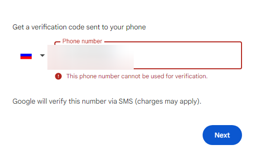

Google ограничил создание новых аккаунтов для граждан России. Информацию об этом подтвердило Минцифры РФ, передает «РИА Новости».
Подтверждение авторизации через sms для ранее созданных аккаунтов еще работает. При этом операторы связи зафиксировали значительное сокращение количества сообщений, отправляемых компанией пользователям из России.
9 сентября пользователи Google с российскими номерами пожаловались на невозможность получить код подтверждения при регистрации новой учетной записи.
В августе стало известно, что Google отключит облачный сервис BigQuery в России с 9 сентября. Работать перестанет только BigQuery – единая платформа для анализа и обработки данных. Отключение не затронет облачные сервисы Google Workspace и Google Cloud.
Ведомство порекомендовало пользователям создать резервные копии данных, перейти на использование альтернативных способов двухфакторной аутентификации или начать использовать отечественные платформы.
Источник: Минцифры подтвердило ограничение Google на создание новых аккаунтов для россиян - Ведомости
Щас пробовал. Заметил, что изменилась система регистрации. Теперь после ввода имени ящика, и пароля, Гугл предлагает отсканить QR, и при его сканировании, переносит в приложение СМС, ну то есть предлагается отправить СМС на какой-то московский(?) номер, с текстом типа “Verify code 1234”, что-то такое. Не пробовал дальше, но чет мне кажется что миницифры врет.
Только что попробовал сделать новый аккаунт. Всё по старому - имя, фамилия, придумайте почту и пароль. Даже не предложил телефон привязать. Когда в этот аккаунт попытался номер добавить - там да, уже ошибка и "попробуйте позже:
{kind=link}
{kind=link}
Говорят, можно через андроид (реальный или на виртуалке). Только не потеряйте его, иначе доступ к учётке пропадёт. Если попытаетесь войти с этой учёткой на десктопе, то ультимативно потребует привязать телефон. Это если IP изменился, вроде. Так что IP тоже должен быть статический.
У меня вот вообще печально. Зарегистрироваться с моей симкой нельзя (пишет этот номер нельзя использовать для регистрации, когда-то была учётка, но удалена), восстановление пароля пишет такой учётки нет.
Наверное, очередная деза, что отвадить людей от гугла.
Давно уже пора новости инвертированно воспринимать.
Вот и надо проверить действительно ли Минцифры РФ врёт про ограничение создания новых аккаунтов Google.
Уже проверяли пару недель назад, помоему была инфа, что это лажа. Хотя есть вероятность, что айпишникам гос контор реально запретили регаться. Чтобы свои ботофермы не водили штабелями
У меня было такое, там не ip, а после переустановки винды устройство перестало быть доверенным и он забанил меня, так как мне была нужна почта пришлось слить номер. Я еще писал, им что могу доказать, что почта моя, ноль реакции, тогда разозлился на них…пусть гуляют
никогда такова не было и вот опять 
Ну а что, западные сервисы уходят время от времени. Плюс на тот же Майкрософт уже не привязать российский номер. А гугл работал до сих пор. В словах миницифры правда может быть в этом случае.
Так нет никакого ограничения, как выяснилось, ты вбросил и сам разгоняешь.
А обязательным мобилу, они уже давно требуют, чем и раздражают. Впрочем как и все остальные. Поэтому и не юзаем.
та ну я себя уже ощущаю как favicon етого сайта всю дорогу
Писали об этом еще больше месяца назад. Где-то еще видел, что проблема возникла даже раньше.
похоже, всё движется к тому, что для новых регистраций с российскими номерами Google скоро станет полностью недоступен
На смартфоне получается создать акк, но подтвердить номер - нет. На ПК какой-то новый метод регистрации, где уже ты отправляешь СМС Гуглу, а не он, может так получится зарегать, но я ща не у ПК чтоб проверить.
upd: проверил на ПК. Теперь предлагает ввести номер, а не отсканировать QR. А ввод номера выдает ошибку 
На ПК тоже нужен смартфон для скана QR кода. А номер +79311066757, Спб.
У меня так уже 2 месяца вообще на любые номера телефонов (даже зарубежные) не понятно почему

Гугл ужесточил требования на создание учеток. Раньше можно было то ли 3 то ли 5 учеток на один номер создавать, щас только 1. Если попытаться, то будет такая же ошибка как на скриншоте
С другого браузера на ПК, Гугл показал код, отсканировал, отправил им СМС. Но у меня на номер зарегано больше одно аккаунта, поэтому вот.
скрин
{kind=link}
Но кажется, в теории, должно работать.
Кстати в этот раз, отправляемое сообщение было русифицировано.
За СМС списали ~10 рублей.
Может Гуглу нечем платить СМС-провайдерам (ибо Гугл банкроты в РФ), и они придумали обход, чтоб не они отправляли СМС с кодом, а им. На мобилки видимо не раскатали это обновление, но раскатали на ПК. Ну, наверное.
Раскатали видимо точечно в рамках теста, у меня никогда никакого QR-кода не было
Google: бесплатные сервисы компании продолжат работать в России
Издание «Известия» связалось с представителями Google, чтобы узнать о недавних проблемах с регистрацией новых аккаунтов пользователей с использованием российских номеров, а также работы сервисов компании в РФ с целом.
«Мы работаем над решением этих проблем. Мы по-прежнему стремимся сохранить наши бесплатные сервисы доступными в России», — заявили представители Google 27 сентября.
Напомним, что в начале сентября начали поступать жалобы пользователей о невозможности создать или восстановить аккаунт Google с использованием российского номера телефона — они попросту не могли получить SMS с кодом для подтверждения личности.
В четверг, 26 сентября, в Минцифры РФ заявили, что Google ограничила создание новых аккаунтов для российских пользователей. Значительное сокращение SMS-сообщений, отправляемых компанией российским пользователям, подтвердили и мобильные операторы.
В Google не уточнили, с чем именно была связана проблема с отправкой SMS-сообщений российским пользователям и причастна ли сама компания к этому. Но напомним, что и YouTube официально в России никак не блокируется.
Источник: https://4pda.to/2024/09/27/433225/google_besplatnye_servisy_kompanii_prodolzhat_rabotat_v_rossii/
вчера пробовал сделать акк в гугле. Через ру айпи - требует куаркод и подтверждение через смс которое не работает. Через впн - все как обычно телефон необязателен. То есть в теории через впн гугл акк сделать можно. Вопрос в том будет ли такая учетка действовать без впн потом
То есть в теории через впн гугл акк сделать можно. Вопрос в том будет ли такая учетка действовать без впн потом
Воткнуть туда дополнительные методы 2FA и включить их, а может быть и почту для восстановления вдобавок, т.к. гугл любит спрашивать дополнительное подтверждение при входе с другого места. А если доступных методов подтверждения нет, то ему остаётся заставлять привязать номер. Но не гарантирую, что это достаточное условие для того, чтобы он номер больше никогда не запросил.
Это в какой стране?
нидерланды
достаточно ли добавить резервную почту для двухфакторки?
достаточно ли добавить резервную почту для двухфакторки?
Этого гарантировать не могу, лучше уж хотя бы TOTP и резервные коды добавить, они анонимны и бесплатны
ProtonVPN Free NL хочет телефон.
У меня не работает